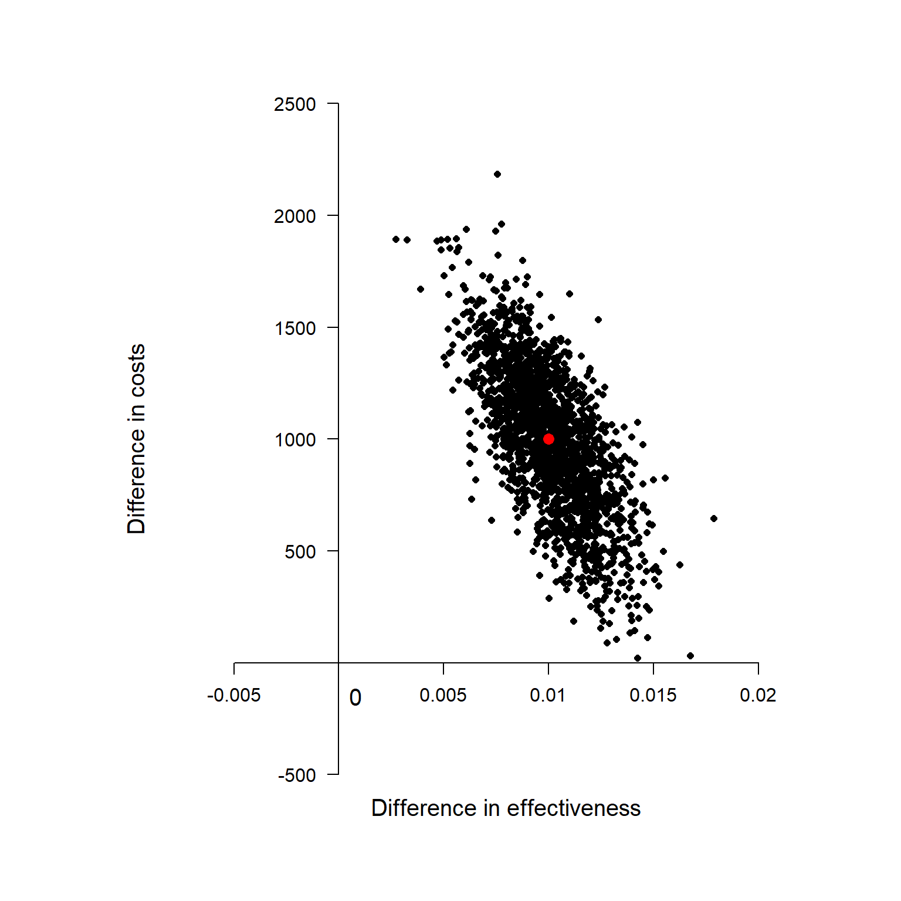

Why health economists do not care about statistical significance?
![]()
Hello dear readers!
I have finally come back from my lethargy with a new exciting posts about why the job of health economists, although inevitably involving some statistics, can be very different from what standard statisticians typically do. To make this point, I will abuse and give my own opinion of the notorious (and now quite old) paper published by Dr. Claxton (Claxton (1999)).
Before starting my discussion I would like to point out a very nice post made by Sam Watson on the Academic Health Economists’ Blog, who nicely provided his own opinion on the matter and discussed the pros and cons of the paper. I really recommend people interested in knowing more about health economics to check out this blog which is one of the most popular in the field and which has contributions from many many health economists on different topics.
In this post, in contrast to what Sam did in his own, I will not focus on the technical details about the health economics decision-making problem of minimising the expected loss / maximising the utility function in terms of societal preferences (i.e. social welfare in terms of effectiveness and costs). Instead, here I would like to address the much simpler and basic question why health economists do not use statistical significance in their analyses?. In my own experience, especially in trial-based analyses, I had to work closely with both health economists and statisticians who often are unaware of what the other “people” are doing. Since cost-effectiveness analyses have become more and more important over the last decade, I believe it is imperative that even statisticians should learn at least the basics of what their colleagues are doing and most importantly why. Of course, the same applies for health economists who should know a bit of statistics in order to do their job. However, in general, I have the feeling statisticians are reluctant to care about health economics, perhaps due to different statistical methodology required for these analyses compared with standard methods used for the analysis of clinical outcomes.
Apologies for the very long premise. So, let’s start with the most basic question of all. what is the objective of health economics ? To inform decision-makers about the cost-effectiveness of a given treatment with respect to alternatives. Unlike the standard clinical analysis which focuses merely on detecting whether there is a “clinically relevant” difference between treatments in terms of some pre-defined outcome measure, the health economic analysis does not qualify as a mere yes/no problem due to the existence of opportunity costs. These are the losses, either in terms of forgone benefits or extra costs, that the society/health care provider would incur by funding a treatment which is not cost-effective compared to others. Precisely, the decision-making nature of the problem comes from the fact that only a limited amount of resources are available to decision-makers, who need to define some sort of rule to prioritise the distribution of the funds across a pool of possible treatments. Thus, if the objective is to maximise the health benefits for a given budget, then treatments should be selected based on a target quantity, which summarises effectiveness, costs and the preferences of decision-makers, while also taking into account the uncertainty about our conclusions. This quantity takes the name of incremental net benefit and is given by
\[ \text{INB} = K \Delta_e - \Delta_c, \]
where \(\Delta_e\) and \(\Delta_c\) are the mean differences between two competing interventions in terms of some effectiveness and cost measures, while \(K\) is the acceptance threshold representing the budget the decision-maker is willing to spend to obtain an increment of one unit of effectiveness (cost per unit of effectiveness gained). If we were to evaluate an hypothesis test about cost-effectiveness of treatment 2 vs treatment 1, we would then test: \(\text{INB} \leq 0\) (\(H_0\)) vs \(\text{INB} > 0\) (\(H_1\)).
A natural test statistic for this hypothesis is:
\[ t = \frac{\sqrt{n}Kd_e-d_c}{\sqrt{K^2 s^2_e -2Ks_{ce}+s^2_c}}, \]
where \(d_e\) and \(d_c\) are the in-sample estimates of the corresponding population values, while \(s\) are the sample standard deviations. Under the null, this test statistic has a t-student distribution with \(n-1\) degrees of freedom. However, we can see how not rejecting the null hypothesis when a new treatment has a positive but statistically insignificant mean incremental net benefit imposes unnecessary costs which can be valued in either monetary or effectiveness terms. Decisions should be based only on the mean irrespective of whether any differences in this quantity are regarded as statistically significant. This is because one of the mutually exclusive alternatives must be chosen and this decision cannot be deferred. The opportunity costs of failing to make the correct decision based on a single test statistic are symmetrical while the definition of which of the alternatives is regarded as current practice is completely irrelevant.
So how do you make the decision if there no hypothesis test ?
Although the ordinary rules of statistical analyses do not apply, we still need to summarise the uncertainty associated with our results based on the mean INB given that decision-making problems must take into account and quantify the impact that sampling uncertainty has on our conclusions. This is typically achieved through the use of re-sampling methods, such as bootstrapping, (frequentist approach) or Bayesian methods. The two approaches are very different from a theoretical perspective but I will not address this point to save me of few weeks of time. Here, I am most interested in what type of results we will obtain once applied these methods. Well, typically we will look at something like this:
